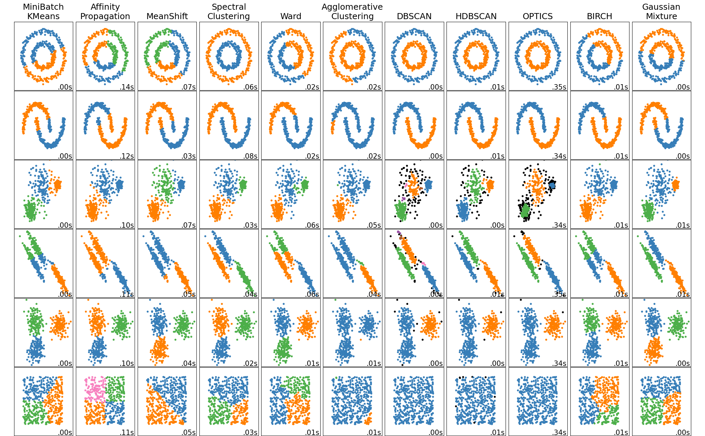
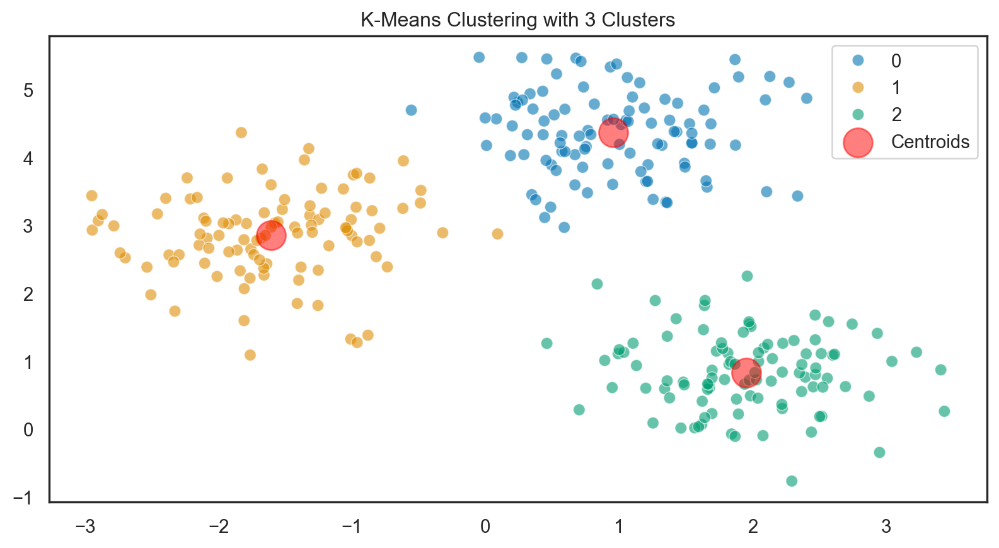
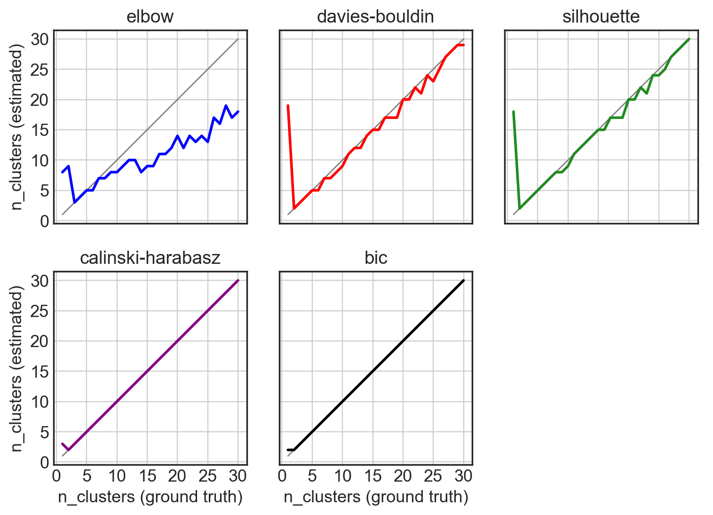
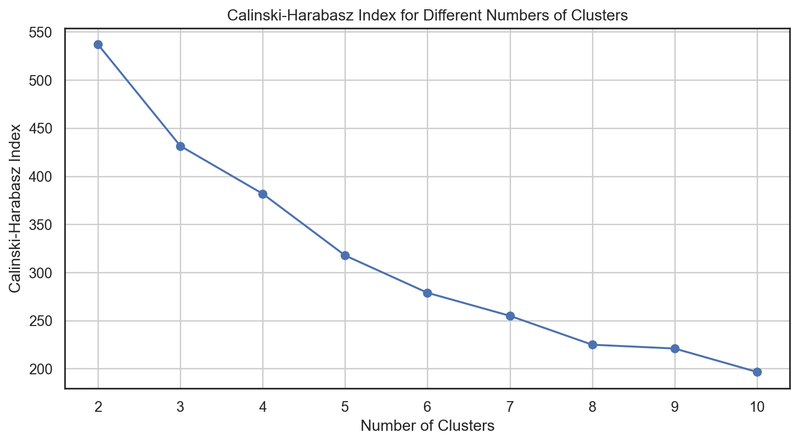
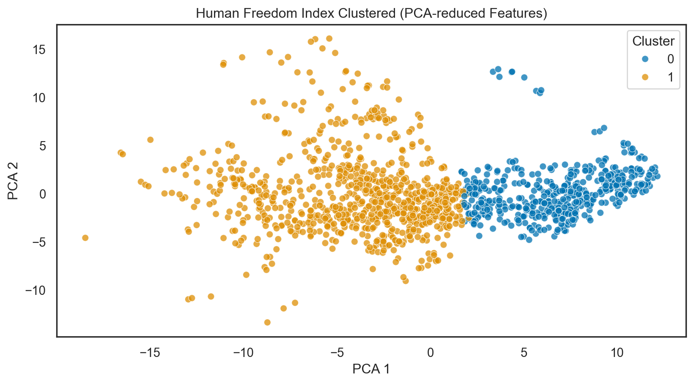
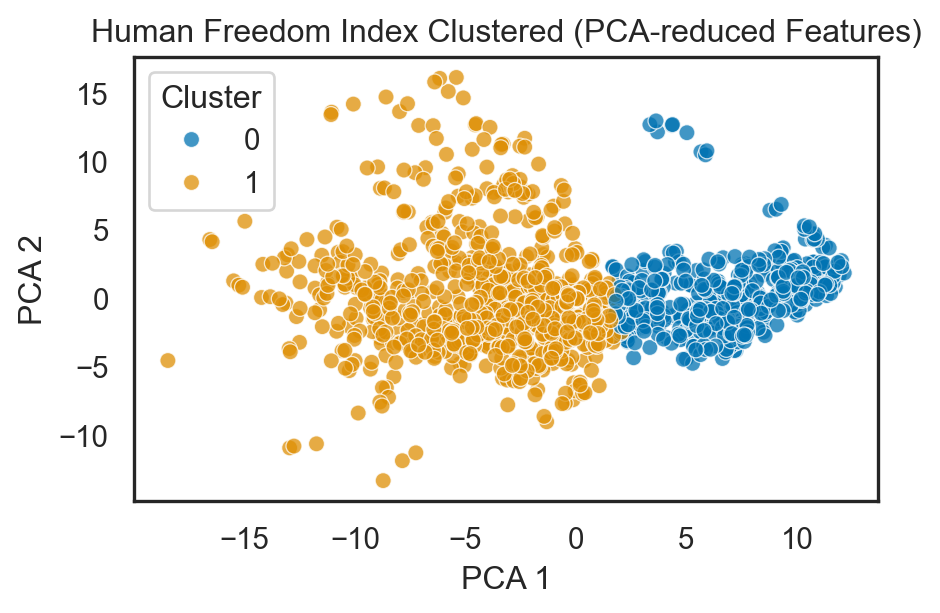
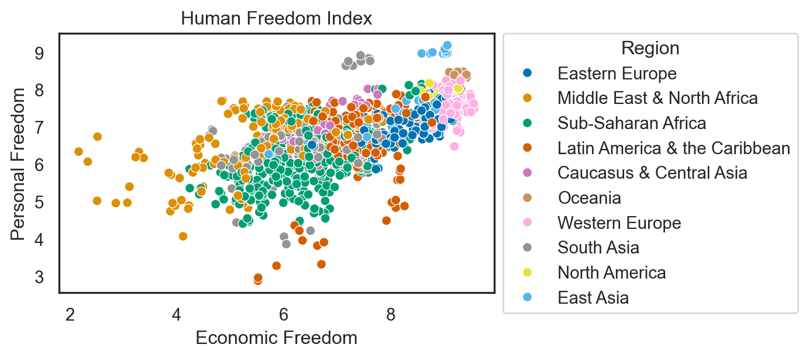

# Data Manipulation and Analysis
import pandas as pd
import numpy as np
# Data Visualization
import seaborn as sns
import matplotlib.pyplot as plt
# Machine Learning
from sklearn.decomposition import PCA
from sklearn.impute import SimpleImputer
from sklearn.preprocessing import StandardScaler, OneHotEncoder
# Statistical Analysis
import statsmodels.api as sm
import scipy.stats as stats
# Increase font size of all Seaborn plot elements
sns.set(font_scale=1.25)
# Set Seaborn theme
sns.set_theme(style="whitegrid", palette="colorblind")PCA + Clustering
INFO Data Visualization and Analysis - Week 5
Dr. Greg Chism
UArizona School of Information
Setup
Data Preprocessing
Data preprocessing can refer to manipulation, filtration or augmentation of data before it is analyzed, and is often an important step in the data analysis process.
Datasets
Human Freedom Index
The Human Freedom Index is a report that attempts to summarize the idea of “freedom” through variables for many countries around the globe.

Our data: Human Freedom Index
| year | ISO_code | countries | region | pf_rol_procedural | pf_rol_civil | pf_rol_criminal | pf_rol | pf_ss_homicide | pf_ss_disappearances_disap | ... | ef_regulation_business_bribes | ef_regulation_business_licensing | ef_regulation_business_compliance | ef_regulation_business | ef_regulation | ef_score | ef_rank | hf_score | hf_rank | hf_quartile | |
|---|---|---|---|---|---|---|---|---|---|---|---|---|---|---|---|---|---|---|---|---|---|
| 0 | 2016 | ALB | Albania | Eastern Europe | 6.661503 | 4.547244 | 4.666508 | 5.291752 | 8.920429 | 10.0 | ... | 4.050196 | 7.324582 | 7.074366 | 6.705863 | 6.906901 | 7.54 | 34.0 | 7.568140 | 48.0 | 2.0 |
| 1 | 2016 | DZA | Algeria | Middle East & North Africa | NaN | NaN | NaN | 3.819566 | 9.456254 | 10.0 | ... | 3.765515 | 8.523503 | 7.029528 | 5.676956 | 5.268992 | 4.99 | 159.0 | 5.135886 | 155.0 | 4.0 |
| 2 | 2016 | AGO | Angola | Sub-Saharan Africa | NaN | NaN | NaN | 3.451814 | 8.060260 | 5.0 | ... | 1.945540 | 8.096776 | 6.782923 | 4.930271 | 5.518500 | 5.17 | 155.0 | 5.640662 | 142.0 | 4.0 |
| 3 | 2016 | ARG | Argentina | Latin America & the Caribbean | 7.098483 | 5.791960 | 4.343930 | 5.744791 | 7.622974 | 10.0 | ... | 3.260044 | 5.253411 | 6.508295 | 5.535831 | 5.369019 | 4.84 | 160.0 | 6.469848 | 107.0 | 3.0 |
| 4 | 2016 | ARM | Armenia | Caucasus & Central Asia | NaN | NaN | NaN | 5.003205 | 8.808750 | 10.0 | ... | 4.575152 | 9.319612 | 6.491481 | 6.797530 | 7.378069 | 7.57 | 29.0 | 7.241402 | 57.0 | 2.0 |
5 rows × 123 columns
Understand the data
<class 'pandas.core.frame.DataFrame'>
RangeIndex: 1458 entries, 0 to 1457
Data columns (total 123 columns):
# Column Dtype
--- ------ -----
0 year int64
1 ISO_code object
2 countries object
3 region object
4 pf_rol_procedural float64
5 pf_rol_civil float64
6 pf_rol_criminal float64
7 pf_rol float64
8 pf_ss_homicide float64
9 pf_ss_disappearances_disap float64
10 pf_ss_disappearances_violent float64
11 pf_ss_disappearances_organized float64
12 pf_ss_disappearances_fatalities float64
13 pf_ss_disappearances_injuries float64
14 pf_ss_disappearances float64
15 pf_ss_women_fgm float64
16 pf_ss_women_missing float64
17 pf_ss_women_inheritance_widows float64
18 pf_ss_women_inheritance_daughters float64
19 pf_ss_women_inheritance float64
20 pf_ss_women float64
21 pf_ss float64
22 pf_movement_domestic float64
23 pf_movement_foreign float64
24 pf_movement_women float64
25 pf_movement float64
26 pf_religion_estop_establish float64
27 pf_religion_estop_operate float64
28 pf_religion_estop float64
29 pf_religion_harassment float64
30 pf_religion_restrictions float64
31 pf_religion float64
32 pf_association_association float64
33 pf_association_assembly float64
34 pf_association_political_establish float64
35 pf_association_political_operate float64
36 pf_association_political float64
37 pf_association_prof_establish float64
38 pf_association_prof_operate float64
39 pf_association_prof float64
40 pf_association_sport_establish float64
41 pf_association_sport_operate float64
42 pf_association_sport float64
43 pf_association float64
44 pf_expression_killed float64
45 pf_expression_jailed float64
46 pf_expression_influence float64
47 pf_expression_control float64
48 pf_expression_cable float64
49 pf_expression_newspapers float64
50 pf_expression_internet float64
51 pf_expression float64
52 pf_identity_legal float64
53 pf_identity_parental_marriage float64
54 pf_identity_parental_divorce float64
55 pf_identity_parental float64
56 pf_identity_sex_male float64
57 pf_identity_sex_female float64
58 pf_identity_sex float64
59 pf_identity_divorce float64
60 pf_identity float64
61 pf_score float64
62 pf_rank float64
63 ef_government_consumption float64
64 ef_government_transfers float64
65 ef_government_enterprises float64
66 ef_government_tax_income float64
67 ef_government_tax_payroll float64
68 ef_government_tax float64
69 ef_government float64
70 ef_legal_judicial float64
71 ef_legal_courts float64
72 ef_legal_protection float64
73 ef_legal_military float64
74 ef_legal_integrity float64
75 ef_legal_enforcement float64
76 ef_legal_restrictions float64
77 ef_legal_police float64
78 ef_legal_crime float64
79 ef_legal_gender float64
80 ef_legal float64
81 ef_money_growth float64
82 ef_money_sd float64
83 ef_money_inflation float64
84 ef_money_currency float64
85 ef_money float64
86 ef_trade_tariffs_revenue float64
87 ef_trade_tariffs_mean float64
88 ef_trade_tariffs_sd float64
89 ef_trade_tariffs float64
90 ef_trade_regulatory_nontariff float64
91 ef_trade_regulatory_compliance float64
92 ef_trade_regulatory float64
93 ef_trade_black float64
94 ef_trade_movement_foreign float64
95 ef_trade_movement_capital float64
96 ef_trade_movement_visit float64
97 ef_trade_movement float64
98 ef_trade float64
99 ef_regulation_credit_ownership float64
100 ef_regulation_credit_private float64
101 ef_regulation_credit_interest float64
102 ef_regulation_credit float64
103 ef_regulation_labor_minwage float64
104 ef_regulation_labor_firing float64
105 ef_regulation_labor_bargain float64
106 ef_regulation_labor_hours float64
107 ef_regulation_labor_dismissal float64
108 ef_regulation_labor_conscription float64
109 ef_regulation_labor float64
110 ef_regulation_business_adm float64
111 ef_regulation_business_bureaucracy float64
112 ef_regulation_business_start float64
113 ef_regulation_business_bribes float64
114 ef_regulation_business_licensing float64
115 ef_regulation_business_compliance float64
116 ef_regulation_business float64
117 ef_regulation float64
118 ef_score float64
119 ef_rank float64
120 hf_score float64
121 hf_rank float64
122 hf_quartile float64
dtypes: float64(119), int64(1), object(3)
memory usage: 1.4+ MB| year | pf_rol_procedural | pf_rol_civil | pf_rol_criminal | pf_rol | pf_ss_homicide | pf_ss_disappearances_disap | pf_ss_disappearances_violent | pf_ss_disappearances_organized | pf_ss_disappearances_fatalities | ... | ef_regulation_business_bribes | ef_regulation_business_licensing | ef_regulation_business_compliance | ef_regulation_business | ef_regulation | ef_score | ef_rank | hf_score | hf_rank | hf_quartile | |
|---|---|---|---|---|---|---|---|---|---|---|---|---|---|---|---|---|---|---|---|---|---|
| count | 1458.000000 | 880.000000 | 880.000000 | 880.000000 | 1378.000000 | 1378.000000 | 1369.000000 | 1378.000000 | 1279.000000 | 1378.000000 | ... | 1283.000000 | 1357.000000 | 1368.000000 | 1374.000000 | 1378.000000 | 1378.000000 | 1378.000000 | 1378.000000 | 1378.000000 | 1378.000000 |
| mean | 2012.000000 | 5.589355 | 5.474770 | 5.044070 | 5.309641 | 7.412980 | 8.341855 | 9.519458 | 6.772869 | 9.584972 | ... | 4.886192 | 7.698494 | 6.981858 | 6.317668 | 7.019782 | 6.785610 | 76.973149 | 6.993444 | 77.007983 | 2.490566 |
| std | 2.582875 | 2.080957 | 1.428494 | 1.724886 | 1.529310 | 2.832947 | 3.225902 | 1.744673 | 2.768983 | 1.559826 | ... | 1.889168 | 1.728507 | 1.979200 | 1.230988 | 1.027625 | 0.883601 | 44.540142 | 1.025811 | 44.506549 | 1.119698 |
| min | 2008.000000 | 0.000000 | 0.000000 | 0.000000 | 0.000000 | 0.000000 | 0.000000 | 0.000000 | 0.000000 | 0.000000 | ... | 0.000000 | 0.000000 | 0.000000 | 2.009841 | 2.483540 | 2.880000 | 1.000000 | 3.765827 | 1.000000 | 1.000000 |
| 25% | 2010.000000 | 4.133333 | 4.549550 | 3.789724 | 4.131746 | 6.386978 | 10.000000 | 10.000000 | 5.000000 | 9.942607 | ... | 3.433786 | 6.874687 | 6.368178 | 5.591851 | 6.429498 | 6.250000 | 38.000000 | 6.336685 | 39.000000 | 1.000000 |
| 50% | 2012.000000 | 5.300000 | 5.300000 | 4.575189 | 4.910797 | 8.638278 | 10.000000 | 10.000000 | 7.500000 | 10.000000 | ... | 4.418371 | 8.074161 | 7.466692 | 6.265234 | 7.082075 | 6.900000 | 77.000000 | 6.923840 | 76.000000 | 2.000000 |
| 75% | 2014.000000 | 7.389499 | 6.410975 | 6.400000 | 6.513178 | 9.454402 | 10.000000 | 10.000000 | 10.000000 | 10.000000 | ... | 6.227978 | 8.991882 | 8.209310 | 7.139718 | 7.720955 | 7.410000 | 115.000000 | 7.894660 | 115.000000 | 3.000000 |
| max | 2016.000000 | 9.700000 | 8.773533 | 8.719848 | 8.723094 | 9.926568 | 10.000000 | 10.000000 | 10.000000 | 10.000000 | ... | 9.623811 | 9.999638 | 9.865488 | 9.272600 | 9.439828 | 9.190000 | 162.000000 | 9.126313 | 162.000000 | 4.000000 |
8 rows × 120 columns
Identifying missing values
year 0
ISO_code 0
countries 0
region 0
pf_rol_procedural 578
...
ef_score 80
ef_rank 80
hf_score 80
hf_rank 80
hf_quartile 80
Length: 123, dtype: int64A lot of missing values üôÉ
Data Cleaning
Handling missing data
Options
- Do nothing…
- Remove them
- Imputate
We will be using pf_score from hsi: 80 missing values
Imputation
In statistics, imputation is the process of replacing missing data with substituted values.
Considerations
- Data distribution
- Impact on analysis
- Missing data mechanism
- Multiple imputation
- Can also be used on outliers
Mean imputation
How it Works: Replace missing values with the arithmetic mean of the non-missing values in the same variable.
Pros:
- Easy and fast.
- Works well with small numerical datasets
Cons:
- It only works on the column level.
- Will give poor results on encoded categorical features.
- Not very accurate.
- Doesn’t account for the uncertainty in the imputations.
hfi_copy = hfi
mean_imputer = SimpleImputer(strategy = 'mean')
hfi_copy['mean_pf_score'] = mean_imputer.fit_transform(hfi_copy[['pf_score']])
mean_plot = sns.kdeplot(data = hfi_copy, x = 'pf_score', linewidth = 2, label = "Original")
mean_plot = sns.kdeplot(data = hfi_copy, x = 'mean_pf_score', linewidth = 2, label = "Mean Imputated")
plt.legend()
plt.show()Median imputation
How it Works: Replace missing values with the median of the non-missing values in the same variable.
Pros (same as mean):
- Easy and fast.
- Works well with small numerical datasets
Cons (same as mean):
- It only works on the column level.
- Will give poor results on encoded categorical features.
- Not very accurate.
- Doesn’t account for the uncertainty in the imputations.
median_imputer = SimpleImputer(strategy = 'median')
hfi_copy['median_pf_score'] = median_imputer.fit_transform(hfi_copy[['pf_score']])
median_plot = sns.kdeplot(data = hfi_copy, x = 'pf_score', linewidth = 2, label = "Original")
median_plot = sns.kdeplot(data = hfi_copy, x = 'median_pf_score', linewidth = 2, label = "Median Imputated")
plt.legend()
plt.show()Data type conversion
| year | ISO_code | countries | region | pf_rol_procedural | pf_rol_civil | pf_rol_criminal | pf_rol | pf_ss_homicide | pf_ss_disappearances_disap | ... | ef_regulation_business_compliance | ef_regulation_business | ef_regulation | ef_score | ef_rank | hf_score | hf_rank | hf_quartile | mean_pf_score | median_pf_score | |
|---|---|---|---|---|---|---|---|---|---|---|---|---|---|---|---|---|---|---|---|---|---|
| 0 | 2016-01-01 | ALB | Albania | Eastern Europe | 6.661503 | 4.547244 | 4.666508 | 5.291752 | 8.920429 | 10.0 | ... | 7.074366 | 6.705863 | 6.906901 | 7.54 | 34.0 | 7.56814 | 48.0 | 2.0 | 7.596281 | 7.596281 |
1 rows × 125 columns
Removing duplicates
<class 'pandas.core.frame.DataFrame'>
RangeIndex: 1458 entries, 0 to 1457
Columns: 125 entries, year to median_pf_score
dtypes: datetime64[ns](1), float64(121), object(3)
memory usage: 1.4+ MB<class 'pandas.core.frame.DataFrame'>
RangeIndex: 1458 entries, 0 to 1457
Columns: 125 entries, year to median_pf_score
dtypes: datetime64[ns](1), float64(121), object(3)
memory usage: 1.4+ MBNo duplicates! üòä
Dimensional reduction
Dimension reduction, is the transformation of data from a high-dimensional space into a low-dimensional space so that the low-dimensional representation retains some meaningful properties of the original data, ideally close to its intrinsic dimension.
Principal component analysis (PCA) - Unsupervised
Maximizes variance in the dataset.
Finds orthogonal principal components.
Useful for feature extraction and data visualization.
Dimensional reduction: applied
numeric_cols = hfi.select_dtypes(include = [np.number]).columns
# Applying mean imputation only to numeric columns
hfi[numeric_cols] = hfi[numeric_cols].fillna(hfi[numeric_cols].mean())
features = ['pf_rol_procedural', 'pf_rol_civil', 'pf_rol_criminal', 'pf_rol', 'hf_score', 'hf_rank', 'hf_quartile']
x = hfi.loc[:, features].values
y = hfi.loc[:, 'region'].values
x = StandardScaler().fit_transform(x)Code
pca = PCA(n_components = 2)
principalComponents = pca.fit_transform(x)
principalDf = pd.DataFrame(data = principalComponents, columns = ['principal component 1', 'principal component 2'])
pca_variance_explained = pca.explained_variance_ratio_
print("Variance explained:", pca_variance_explained, "\n", principalDf)Variance explained: [0.76138995 0.15849799]
principal component 1 principal component 2
0 5.164625e-01 -9.665680e-01
1 -2.366765e+00 1.957381e+00
2 -2.147729e+00 1.664483e+00
3 -2.784437e-01 8.066415e-01
4 3.716205e-01 -4.294282e-01
... ... ...
1453 -4.181375e+00 -4.496988e-01
1454 -5.213024e-01 6.010449e-01
1455 1.374342e-16 -2.907121e-16
1456 -1.545577e+00 -5.422255e-01
1457 -3.669011e+00 4.294948e-01
[1458 rows x 2 columns]Code
# Combining the scatterplot of principal components with the scree plot using the correct column names
fig, axes = plt.subplots(nrows = 1, ncols = 2, figsize = (12, 5))
# Scatterplot of Principal Components
axes[0].scatter(principalDf['principal component 1'], principalDf['principal component 2'])
for i in range(len(pca.components_)):
axes[0].arrow(0, 0, pca.components_[i, 0], pca.components_[i, 1], head_width = 0.1, head_length = 0.15, fc = 'r', ec = 'r', linewidth = 2)
axes[0].text(pca.components_[i, 0] * 1.2, pca.components_[i, 1] * 1.2, f'Eigenvector {i+1}', color = 'r', fontsize = 12)
axes[0].set_xlabel('Principal Component 1')
axes[0].set_ylabel('Principal Component 2')
axes[0].set_title('Scatterplot of Principal Components with Eigenvectors')
axes[0].grid()
# Scree Plot for PCA
axes[1].bar(range(1, len(pca_variance_explained) + 1), pca_variance_explained, alpha = 0.6, color = 'g', label = 'Individual Explained Variance')
axes[1].set_ylabel('Explained variance ratio')
axes[1].set_xlabel('Principal components')
axes[1].set_title('Scree Plot for PCA')
axes[1].legend(loc='best')
plt.tight_layout()
plt.show()So, that’s it?
…Not really
Find the optimal number of components.
Code
# Assuming hfi DataFrame is already defined and loaded
# Select numerical columns
numerical_cols = hfi.select_dtypes(include=['int64', 'float64']).columns
# Scale the data
scaler = StandardScaler()
scaled_data = scaler.fit_transform(hfi[numerical_cols])
# Apply PCA
pca = PCA().fit(scaled_data)
# Get explained variance ratio and cumulative explained variance
explained_variance_ratio = pca.explained_variance_ratio_
cumulative_explained_variance = explained_variance_ratio.cumsum()
# Decide number of components to retain 75% variance
threshold = 0.75
num_components = next(i for i, cumulative_var in enumerate(cumulative_explained_variance) if cumulative_var >= threshold) + 1
# Plot the explained variance
plt.figure(figsize=(10, 6))
plt.plot(range(1, len(cumulative_explained_variance) + 1), cumulative_explained_variance, marker='o', linestyle='--')
plt.axhline(y=threshold, color='r', linestyle='-')
plt.axvline(x=num_components, color='r', linestyle='-')
plt.annotate(f'{num_components} components', xy=(num_components, threshold), xytext=(num_components+5, threshold-0.05),
arrowprops=dict(color='r', arrowstyle='->'),
fontsize=12, color='r')
plt.title('Cumulative Explained Variance by Principal Components')
plt.xlabel('Principal Component')
plt.ylabel('Cumulative Explained Variance')
plt.grid(True)
plt.show()
print(f"Number of components to retain 75% variance: {num_components}")
# Apply PCA with the chosen number of components
pca = PCA(n_components=num_components)
reduced_data = pca.fit_transform(scaled_data)Number of components to retain 75% variance: 19Dimensional reduction: what now?
Feature Selection: Choose the most informative components.
Visualization: Graph the reduced dimensions to identify patterns.
Clustering: Group similar data points using clustering algorithms.
Classification: Predict categories using classifiers on reduced features.
Model Evaluation: Assess model performance with metrics like accuracy.
Cross-Validation: Validate model stability with cross-validation.
Hyperparameter Tuning: Optimize model settings for better performance.
Model Interpretation: Understand feature influence in the models.
Ensemble Methods: Improve predictions by combining multiple models.
Deployment: Deploy the model for real-world predictions.
Iterative Refinement: Refine analysis based on initial results.
Reporting: Summarize findings for stakeholders.
Clustering
Setup
# Data Handling and Manipulation
import pandas as pd
import numpy as np
# Data Preprocessing
from sklearn.preprocessing import StandardScaler, OneHotEncoder
from sklearn.compose import ColumnTransformer
from sklearn.pipeline import Pipeline
from sklearn.impute import SimpleImputer
from sklearn.decomposition import PCA
# Model Selection and Evaluation
from sklearn.model_selection import train_test_split, GridSearchCV, RandomizedSearchCV
from sklearn.metrics import silhouette_score, davies_bouldin_score, calinski_harabasz_score
from sklearn.mixture import GaussianMixture
# Clustering Models
from sklearn.cluster import KMeans
# Data Visualization
import matplotlib.pyplot as plt
import seaborn as sns
# Set the default style for visualization
sns.set_theme(style = "white", palette = "colorblind")
# Increase font size of all Seaborn plot elements
sns.set(font_scale = 1.25)Unsupervised Learning

Clustering

Clustering
Some use cases for clustering include:
-
- Grouping together users with similar viewing patterns on Netflix, in order to recommend similar content
-
- Fraud detection, detecting defective mechanical parts
Genetics:
- Clustering DNA patterns to analyze evolutionary biology
Customer segmentation:
- Understanding different customer segments to devise marketing strategies
Question
How well can we cluster freedom index scores?
Our data: PCA reduced Human Freedom Index
data = pd.DataFrame(reduced_data)
data.rename(columns=lambda x: f'pc_{x}', inplace=True)
data.head()| pc_0 | pc_1 | pc_2 | pc_3 | pc_4 | pc_5 | pc_6 | pc_7 | pc_8 | pc_9 | pc_10 | pc_11 | pc_12 | pc_13 | pc_14 | pc_15 | pc_16 | pc_17 | pc_18 | |
|---|---|---|---|---|---|---|---|---|---|---|---|---|---|---|---|---|---|---|---|
| 0 | 2.779418 | -0.498626 | 0.469355 | 3.387443 | 0.567041 | 1.296449 | -0.454311 | 0.047696 | -0.150022 | -1.206748 | 2.647105 | 0.583670 | -0.213672 | 1.608173 | -0.374059 | -0.490913 | -0.132991 | -0.403151 | -0.991481 |
| 1 | -9.374297 | 0.647491 | -4.321327 | -4.695802 | -0.672385 | 3.209548 | -0.378487 | -3.215965 | -1.908267 | 0.129144 | 0.595631 | 0.347146 | -0.249731 | -2.302677 | -0.102451 | 0.297895 | 1.443028 | -2.022844 | 0.943593 |
| 2 | -8.850868 | -2.931088 | 2.220075 | -2.100491 | -0.818193 | 0.224287 | -1.318509 | 0.308495 | -4.324757 | -1.111543 | 0.689022 | -1.816347 | 1.090664 | -0.404623 | 1.047847 | 0.230615 | 0.151937 | 0.683630 | 3.053161 |
| 3 | -1.708081 | -6.713719 | 2.768734 | -5.725613 | -1.733888 | -1.348572 | -4.638082 | -1.049769 | -3.157522 | 0.848578 | -0.132706 | 3.154590 | -0.318503 | -3.688724 | -1.217743 | -0.400556 | 3.205119 | -0.621442 | -1.703220 |
| 4 | 1.640691 | 2.223795 | 2.299552 | 0.792827 | -2.449994 | 0.373804 | 2.057514 | -1.241613 | 0.767273 | 0.386597 | 0.679367 | -0.893322 | -1.659838 | -0.013696 | 0.463806 | 0.941999 | 0.872254 | 0.104267 | -0.210407 |
Clustering methods
K-Means Clustering

The goal of K-Means is to minimize the variance within each cluster. The variance is measured as the sum of squared distances between each point and its corresponding cluster centroid. The objective function, which K-Means aims to minimize, can be defined as:
\(J = \sum_{i=1}^{k} \sum_{x \in C_i} ||x - \mu_i||^2\)
Where:
\(J\) is the objective function
\(k\) is the number of clusters
\(C_i\) is the set of points belonging to a cluster \(i\).
\(x\) is a point in the cluster \(C_i\)
\(||x - \mu_i||^2\) is the squared Euclidean distance between a point \(x\) and the centroid \(\mu_i\)​, which measures the dissimilarity between them.
Initialization: Randomly selects \(k\) initial centroids.
Assignment Step: Assigns each data point to the closest centroid based on Euclidean distance.
Update Step: Recalculates centroids as the mean of assigned points in each cluster.
Convergence: Iterates until the centroids stabilize (minimal change from one iteration to the next).
Objective: Minimizes the within-cluster sum of squares (WCSS), the sum of squared distances between points and their corresponding centroid.
Optimal \(k\): Determined experimentally, often using methods like the Elbow Method.
Sensitivity: Results can vary based on initial centroid selection; techniques like “k-means++” improve initial centroid choices.
Efficiency: Generally good, but worsens with increasing \(k\) and data dimensionality; sensitive to outliers.
Choosing the right number of clusters
Four main methods:
Elbow Method
- Identifies the \(k\) at which the within-cluster sum of squares (WCSS) starts to diminish more slowly.
Silhouette Score
- Measures how similar an object is to its own cluster compared to other clusters.
Davies-Bouldin Index
- Evaluates intra-cluster similarity and inter-cluster differences.
Calinski-Harabasz Index (Variance Ratio Criterion)
- Measures the ratio of the sum of between-clusters dispersion and of intra-cluster dispersion for all clusters.
BIC
- Identifies the optimal number of clusters by penalizing models for excessive parameters, striking a balance between simplicity and accuracy.
Systematic comparison: Equal clusters


Systematic comparison: Unequal clusters


Systematic comparison - accuracy

Calinski-Harabasz Index
\(CH = \frac{SS_B / (k - 1)}{SS_W / (n - k)}\)
where:
\(CH\) is the Calinski-Harabasz score.
\(SS_B\)​ is the between-cluster variance.
\(SS_W\)​ is the within-cluster variance.
\(k\) is the number of clusters.
\(n\) is the number of data points.
Pros:
Clear Interpretation: High values indicate better-defined clusters.
Computationally Efficient: Less resource-intensive than many alternatives.
Scale-Invariant: Effective across datasets of varying sizes.
No Labeled Data Required: Useful for unsupervised learning scenarios.
Cons:
Cluster Structure Bias: Prefers convex clusters of similar sizes.
Sample Size Sensitivity: Can favor more clusters in larger datasets.
Not Ideal for Overlapping Clusters: Assumes distinct, non-overlapping clusters.
BIC
\(\text{BIC} = -2 \ln(\hat{L}) + k \ln(n)\)
where:
\(\hat{L}\) is the maximized value of the likelihood function of the model,
\(k\) is the number of parameters in the model,
\(n\) is the number of observations.
Pros:
Penalizes Complexity: Helps avoid overfitting by penalizing models with more parameters.
Objective Selection: Facilitates choosing the model with the best balance between fit and simplicity.
Applicability: Useful across various model types, including clustering and regression.
Cons:
Computationally Intensive: Requires fitting multiple models to calculate, which can be resource-heavy.
Sensitivity to Model Assumptions: Performance depends on the underlying assumptions of the model being correct.
Not Always Intuitive: Determining the absolute best model may still require domain knowledge and additional diagnostics.
K-Means Clustering: applied
Code
# Finding the optimal number of clusters using Calinski-Harabasz Index
calinski_harabasz_scores = []
cluster_range = range(2, 11) # Define the range for number of clusters
for n_clusters in cluster_range:
kmeans = KMeans(n_clusters=n_clusters, random_state=0)
kmeans.fit(data)
labels = kmeans.labels_
score = calinski_harabasz_score(data, labels)
calinski_harabasz_scores.append(score)
# Plotting the Calinski-Harabasz scores
plt.plot(cluster_range, calinski_harabasz_scores, marker='o')
plt.title('Calinski-Harabasz Index for Different Numbers of Clusters')
plt.xlabel('Number of Clusters')
plt.ylabel('Calinski-Harabasz Index')
plt.grid(True)
plt.show()
# Finding the number of clusters that maximizes the Calinski-Harabasz Index
optimal_n_clusters = cluster_range[calinski_harabasz_scores.index(max(calinski_harabasz_scores))]
print(f"The optimal number of clusters is: {optimal_n_clusters}")
The optimal number of clusters is: 2Code
# K-Means Clustering with the optimal number of clusters
kmeans = KMeans(n_clusters=optimal_n_clusters, random_state=0)
kmeans.fit(data)
clusters = kmeans.predict(data)
# Adding cluster labels to the DataFrame
data['Cluster'] = clusters
# Model Summary
print("Cluster Centers:\n", kmeans.cluster_centers_)
# Evaluate clustering performance using the Calinski-Harabasz Index
calinski_harabasz_score_final = calinski_harabasz_score(data.drop(columns='Cluster'), clusters)
print(f"For n_clusters = {optimal_n_clusters}, the Calinski-Harabasz Index is : {calinski_harabasz_score_final:.3f}")Cluster Centers:
[[ 6.81306346 0.19993757 -0.28806769 -0.29502272 -0.46716703 0.05454598
-0.12994433 0.03657521 -0.02176455 0.03151719 0.24393655 -0.01449253
-0.03272898 0.04760448 -0.01648803 -0.03251455 0.01440017 0.05300893
-0.01630804]
[-3.57757098 -0.10498814 0.15126567 0.15491779 0.24531156 -0.02864235
0.06823436 -0.01920581 0.01142867 -0.01654982 -0.12809221 0.0076101
0.01718614 -0.02499733 0.00865794 0.01707354 -0.00756159 -0.02783523
0.00856343]]
For n_clusters = 2, the Calinski-Harabasz Index is : 536.957Code
pca = PCA(n_components = 2)
reduced_data_PCA = pca.fit_transform(data)
sns.scatterplot(x = reduced_data_PCA[:, 0], y = reduced_data_PCA[:, 1], hue = clusters, alpha = 0.75, palette = "colorblind")
plt.title('Human Freedom Index Clustered (PCA-reduced Features)')
plt.xlabel('PCA 1')
plt.ylabel('PCA 2')
plt.legend(title = 'Cluster')
plt.show()
Caveat


Conclusions
Clear Separation:
- Two distinct clusters (Cluster 0 and Cluster 1) are evident, indicating effective separation by PCA.
Cluster Characteristics:
Cluster 1 (orange) is compact and concentrated around the origin.
Cluster 0 (blue) is more spread out across the PCA axes.
Slight Overlap:
- There is a transition zone between the clusters, suggesting some borderline cases.
PCA Components:
- The axes represent the first two principal components, highlighting significant differences in the clusters.
Implications:
- The clusters likely reflect differences in Human Freedom Index scores, with further analysis needed to understand specific feature contributions.